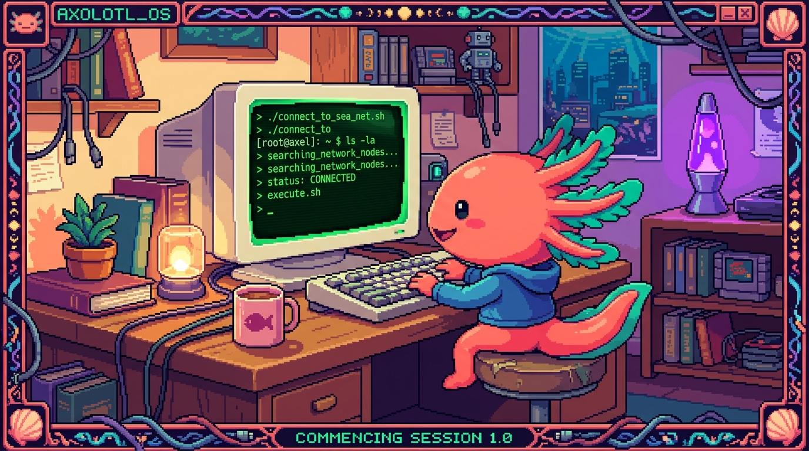

Capítulo 04 — La terminal

La terminal intimida al principio (es esa pantalla negra que sale en las películas de "hackers"), pero la verdad es que resulta mucho más simple de lo que parece, y a la vez es de las herramientas que más rinden. La vas a usar para Git, para Python, para tu NAS y para casi todo lo demás. Vamos despacio, paso a paso.
1. ¿Qué es la terminal y por qué existe?
🟦 ¿Qué significa? — Terminal (o línea de comandos)
La terminal es un programa donde le das órdenes a la computadora escribiéndolas con el teclado, en vez de hacer clics con el ratón. Escribes un comando (una orden), pulsas Enter, y la computadora lo ejecuta y te contesta con texto. También se le dice línea de comandos, consola o CLI (Command-Line Interface, "interfaz de línea de comandos").
🟦 ¿Qué significa? — Interfaz gráfica (GUI) vs. CLI
La manera de siempre de usar una computadora —ventanas, íconos, ratón— se llama GUI (Graphical User Interface, "interfaz gráfica de usuario"). La terminal es justo lo contrario: solo texto (CLI). Las dos sirven para lo mismo, dar órdenes, pero cada una a su modo.
¿Para qué usar texto teniendo ratón? Por tres motivos que pesan:
- Precisión: un comando hace exactamente una cosa, sin lugar a dudas.
- Velocidad y repetición: en una sola línea haces lo que con el ratón te costaría 50 clics, y además puedes automatizar tareas (que se repitan solas).
- Servidores sin pantalla: tu NAS no tiene monitor ni ratón conectados; se administra por terminal (así es como corre Ubuntu Server, de hecho). Sin terminal, no hay servidor.
🟦 ¿Qué significa? — Shell
El shell ("caparazón") es el programa que interpreta lo que escribes en la terminal y se lo traslada al sistema. Piensa en la diferencia entre la ventana (la terminal) y el cerebro que entiende los comandos (el shell). Los más comunes son bash y zsh en Linux/macOS, y PowerShell en Windows. Por ahora no te líes con los nombres: quédate con que "shell" = el que entiende tus comandos.
2. Cómo abrir la terminal (en tu computadora)
- Windows: busca "PowerShell" o "Terminal" en el menú Inicio. (Si más adelante quieres practicar comandos al estilo Linux, puedes instalar "WSL", pero ahora mismo no hace falta.)
- macOS: abre "Terminal" (la encuentras en Aplicaciones → Utilidades, o búscala con Spotlight).
- Linux / tu NAS: aquí la terminal es la forma principal de trabajar. A tu NAS te conectarás de forma remota (eso lo verás en el módulo 09).
Al abrirla te aparecerá algo parecido a usuario@maquina:~$ y un cursor parpadeando. Eso es el
prompt: la terminal te está diciendo "estoy lista, escribe una orden".
🟦 ¿Qué significa? — Directorio de trabajo actual
La terminal siempre está "parada" dentro de una carpeta (un directorio). Esa es tu ubicación actual, y muchos comandos actúan sobre ella. El símbolo
~significa "tu carpeta personal" (la de tu usuario).
3. Los comandos para sobrevivir (moverte y mirar)
Estos los usarás el 80% del tiempo. Cuando tengas tu computadora a mano, pruébalos en orden.
| Comando | Qué hace | Ejemplo |
|---|---|---|
pwd |
Print Working Directory: muestra en qué carpeta estás | pwd |
ls |
List: lista los archivos y carpetas de donde estás | ls |
cd |
Change Directory: entra a una carpeta | cd Documentos |
cd .. |
sube un nivel (a la carpeta de arriba) | cd .. |
mkdir |
Make Directory: crea una carpeta | mkdir proyectos |
touch |
crea un archivo vacío (Linux/macOS) | touch notas.txt |
cat |
muestra el contenido de un archivo | cat notas.txt |
cp |
Copy: copia un archivo | cp notas.txt copia.txt |
mv |
Move: mueve o renombra | mv notas.txt diario.txt |
rm |
Remove: borra un archivo | rm copia.txt |
clear |
limpia la pantalla | clear |
⚠️ Cuidado —
rmno tiene papeleraEn la terminal,
rmborra de verdad: no pasa por la papelera de reciclaje y no hay "deshacer". Ojo sobre todo conrm -r, que borra una carpeta entera con todo lo que tenga dentro. Antes de borrar nada, lanza unlspara confirmar que estás donde crees que estás.🟦 ¿Qué significa? — Argumento y opción (flag)
Un comando puede llevar extras: - Un argumento es sobre qué actúa: en
cd Documentos,Documentoses el argumento. - Una opción o flag cambia cómo actúa, y casi siempre empieza con-: enls -l, la opción-lpide el listado "largo" (con detalles). Enrm -r, la-rsignifica "recursivo" (incluye subcarpetas). ¿Dónde lo viste ya? En este manual aparecieron comandos comogit push -u origin ...: ahí-ues una opción yorigin ...son argumentos. Pronto le agarrarás el hilo del todo.
4. Anatomía de un comando
Casi todos los comandos siguen el mismo patrón:
nombre [opciones] [argumentos]
│ │ │
ls -l Documentos
"lista" "en formato "esta
detallado" carpeta"
Leído en español: "lista, en formato detallado, la carpeta Documentos". En cuanto reconoces este patrón, los comandos dejan de parecer jeroglíficos.
💡 Tip — La tecla Tab es tu mejor amiga
Empieza a escribir el nombre de un archivo o carpeta y pulsa Tab: la terminal lo autocompleta por ti. Te ahorra tiempo y te quita errores de tipeo de encima. Si hay varias opciones posibles, pulsa Tab dos veces para verlas todas.
💡 Tip — Las flechas ↑ ↓ repiten comandos
Pulsa la flecha arriba y traes de vuelta el comando anterior, listo para ejecutarlo otra vez o editarlo. No te pongas a reescribir comandos largos a mano: recíclalos.
5. Pedir ayuda y leer errores
Nadie se sabe de memoria todas las opciones, así que para casi cualquier comando tienes:
comando --help→ te da un resumen de cómo se usa. Ej.:ls --help.man comando→ abre el manual completo (en Linux/macOS). Ej.:man ls. Para salir, pulsaq.
🟦 ¿Qué significa? — Mensaje de error en terminal
Cuando algo sale mal, la terminal te dice qué pasó. Por ejemplo:
cd: no such file or directory: Documantosquiere decir "no existe ninguna carpeta llamada Documantos" (escribiste mal el nombre). Leer el error tal cual está escrito resuelve la mayoría de los problemas: casi siempre es un nombre mal tecleado o que estás en la carpeta equivocada.
6. Por qué esto te acerca a tu NAS
Tu NAS polypaw-nas corre Ubuntu Server, que no tiene escritorio: se administra
escribiendo comandos. Cuando en el módulo 09 te conectes a él, harás cosas como estas:
cd /srv/nas # entrar a la carpeta de datos del NAS
ls -l # ver qué archivos hay, con permisos y tamaños
df -h # ver cuánto espacio libre queda en los discos
Todo lo que aprendas aquí —moverte, listar, leer— es exactamente lo mismo que usarás para administrar tu servidor. La terminal no es un tema suelto: es la llave que abre todo lo demás.
✅ Checklist — ¿ya domino esto?
- [ ] Sé qué es la terminal y la diferencia entre GUI y CLI.
- [ ] Entiendo qué es el shell y el prompt.
- [ ] Puedo moverme (
cd,pwd,ls) y manipular archivos (mkdir,cp,mv,rm). - [ ] Reconozco la anatomía de un comando (nombre + opciones + argumentos).
- [ ] Sé pedir ayuda (
--help,man) y leer un error. - [ ] Entiendo por qué la terminal es clave para administrar mi NAS.
🧪 Ejercicios
Los marcados con 💻 son para tu computadora; los demás puedes razonarlos desde el teléfono.
- Traduce a español. ¿Qué hace cada comando? (a)
ls -l, (b)cd .., (c)mkdir fotos, (d)rm notas.txt. - Anatomía. En
cp informe.txt respaldo.txt, señala: nombre del comando, argumentos y qué hace en palabras. - 💻 Tu primer recorrido. Abre la terminal y, en orden:
pwd,ls, crea una carpetapracticaconmkdir practica, entra concd practica, crea un archivo (touch hola.txten Linux/macOS) y confirma conls. Anota qué mostró cada paso. - 💻 Lee un error a propósito. Escribe
cd carpeta_que_no_existey copia el mensaje de error. Explica con tus palabras qué te está diciendo. - Seguridad. Explica por qué
rm -r practicaes más peligroso querm hola.txt.
➡️ Siguiente: Capítulo 05 — Git y GitHub.